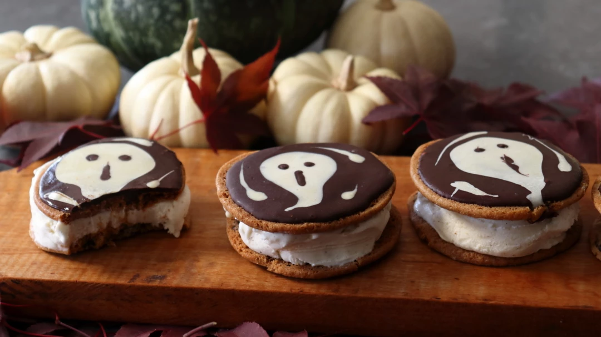

Chocolate "I Scream" Cookie Sandwiches

- 8 large chocolate chip cookies
- 3 tablespoons melted dark chocolate
- 4 teaspoons melted white chocolate
- ½ cup vanilla ice cream
- Cover the flat side of 4 cookies with melted dark chocolate; tap the cookies lightly to smooth out the chocolate.
- While still wet, use a piping bag or spoon to make a ghost shape with the white chocolate; tap lightly once more to smooth as needed. More white designs can be added to the dark chocolate background if desired.
- Use melted dark chocolate to make the eyes and screaming mouth; tap or shake once more to even and smooth out.
- Let chocolate cool until hard and dry to the touch, at least 1 hour.
- Scoop ice cream on 4 remaining cookies, and cover with the tops. Carefully press to flatten, and transfer to a freezer to freeze thoroughly before serving.